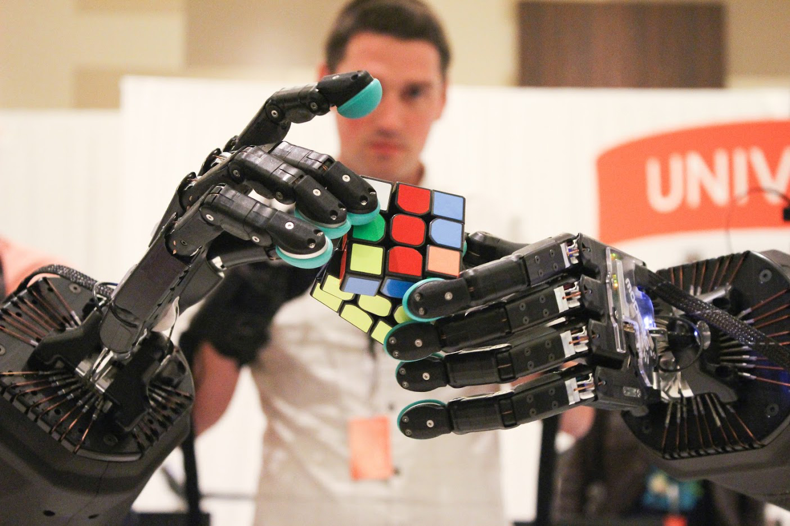

Connect to your potential. Interact with your mind.

Accessibility is a bridge. Let it reach everyone.
Computers are everywhere. Now you can enable anyone through accessibility.

Explore deep knowledge. Become an expert.

Web accessibility

Future of human-machine interfaces

Input output devices